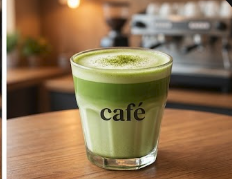
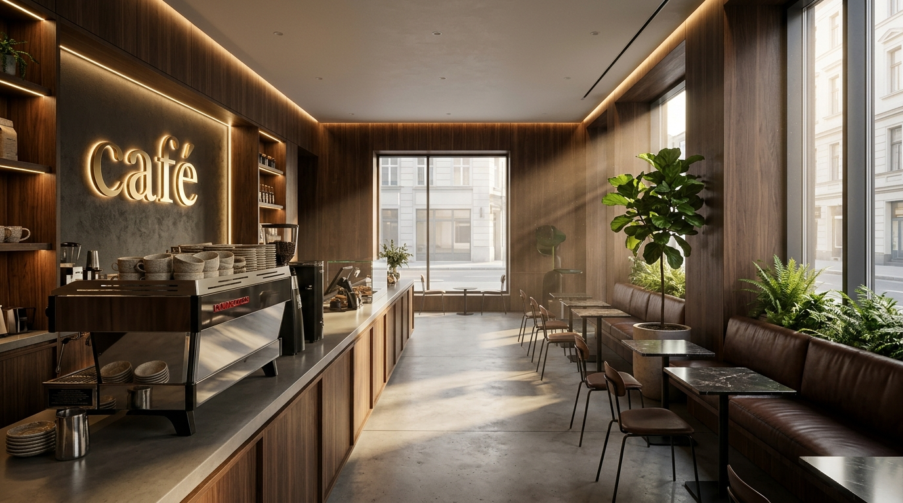
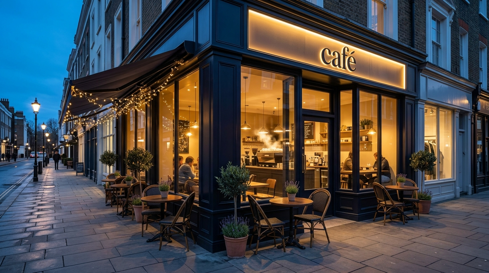

Matcha Latte

Matcha is made from 100% finely ground, specially grown green tea leaves (Camellia sinensis). Its key natural components include L-theanine, high levels of catechins, and caffeine.
Price: $7.00

We are a small cafe that serves delicious coffee and pastries. Our mission is to provide a cozy and welcoming environment where our customers can enjoy their favorite drinks and treats. Come visit us and experience the warmth of our cafe!
Our menu features a variety of coffee drinks, including espresso, cappuccino, latte, and more. We also offer a selection of teas and hot chocolate for those who prefer non-coffee options. Our pastries are freshly baked daily and include croissants, muffins, scones, and cookies.
We take pride in using high-quality ingredients and sourcing our coffee beans from sustainable farms. Our baristas are trained to craft each drink with care and attention to detail, so every cup is a perfect experience. We also offer a loyalty program for our regular customers.

Our customers' top choices for coffee and warm beverages.
"This is literally the best coffee shop in town! Their matcha latte is unbelievably smooth and delicious."